Префектура Хиросима · Хигаси-Хиросима · сакэ
Сакэ Хиросимы: пивоварни «Канэмицу сюдзо» и «Хакуботан»
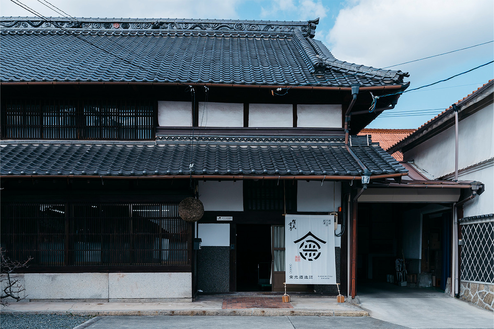
Хиросима входит в тройку главных краёв сакэ Японии. Две пивоварни восточной части префектуры показывают, почему так вышло: семейная «Канэмицу сюдзо» из Куросэ и «Хакуботан» из Сайдзё, чью этикетку рисовал художник Мунаката Сико.
Земля
Почему сакэ варят именно здесь
Восточная Хиросима создана для сакэ. Город Хигаси-Хиросима лежит среди невысоких гор, его центральное место занимает Сайдзё, крупнейшая котловина префектуры, а перепады высот от морского берега до горных долин дарят пейзажам редкое разнообразие. Климат здесь внутриматериковый, с заметной разницей между днём и ночью, летом и зимой, и именно такие колебания любит рис для сакэ. Рядом зерно, чистая вода и плодородные почвы: равнины издавна служат житницей края.
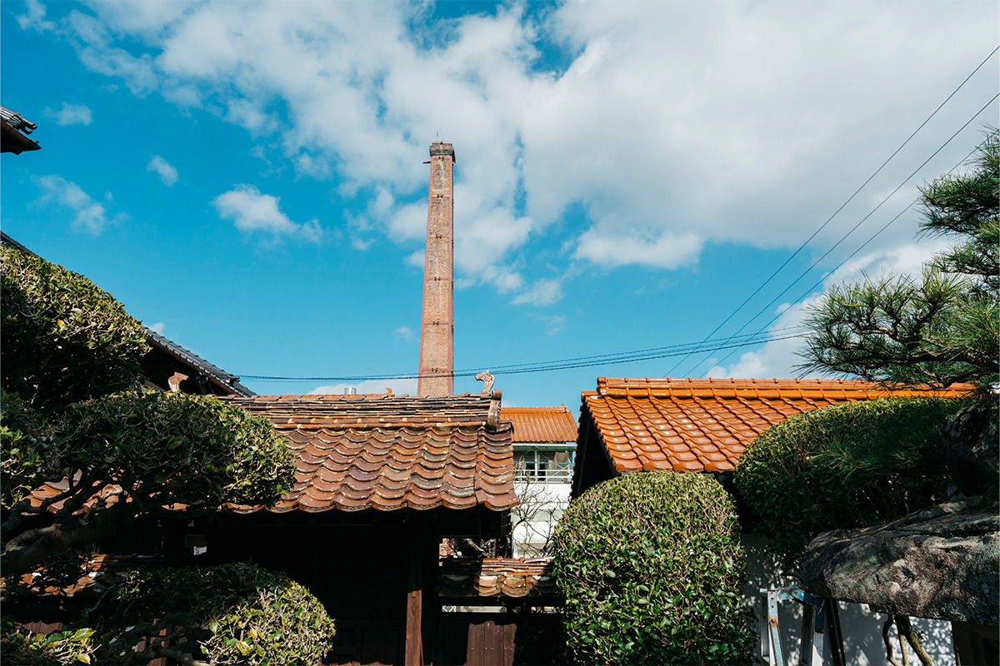
Не случайно этот край называют одним из трёх главных регионов сакэ страны, наравне с Надой в Хёго и Фусими в Киото. Здесь же, в Сайдзё, зародилось гиндзё, ароматное сакэ премиального класса, а зимними выходными квартал старых пивоварен открывает двери для дегустаций.
Пивоварня
«Канэмицу сюдзо»: пять поколений
Пивоварня «Канэмицу сюдзо» открылась в 1880 году, в тринадцатом году эпохи Мэйдзи, в местечке Куросэ подальше от квартала пивоварен Сайдзё. Долгие годы она варила простое, столовое сакэ под маркой «Сакурафубуки», что означает «шквал лепестков сакуры». Перелом случился в 2003 году, когда пятое поколение владельцев решило вернуться к ручному труду: заводские автоматические линии встали, сакэ снова начали варить сотрудники-курабито, мастера-пивовары при пивоварне. Так родилась новая марка «Камокинсю», названная в честь старого района Камо и иероглифов из имени хозяина. Сегодня её качество отмечено множеством наград, а для сакэ берут рис самых разных сортов, выращенный в префектуре.
В 2020 году большую часть зданий пивоварни официально внесли в реестр материальных культурных ценностей Японии: это исторический центр целого района.
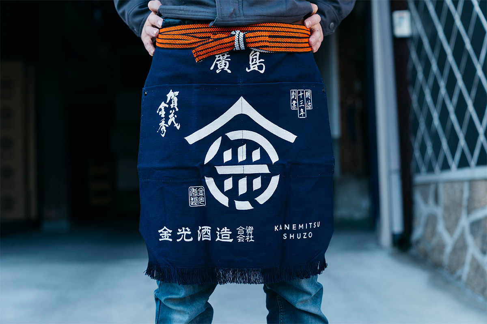
Рис
Рис с хиросимских полей
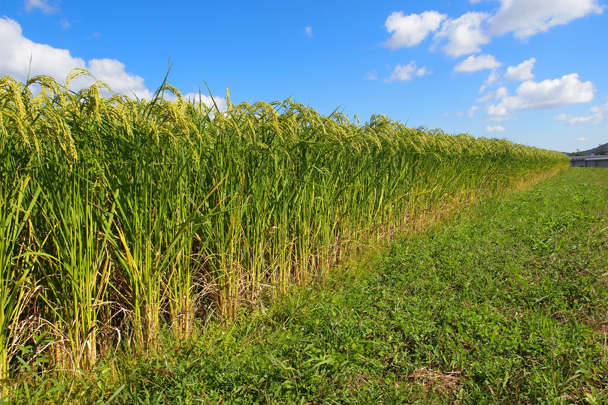
Для варки, промывки и замачивания риса здесь берут воду из собственного колодца на территории пивоварни. Железа в ней совсем немного, поэтому сакэ получается минеральным, с долгим послевкусием, и характер воды остаётся в готовом напитке.
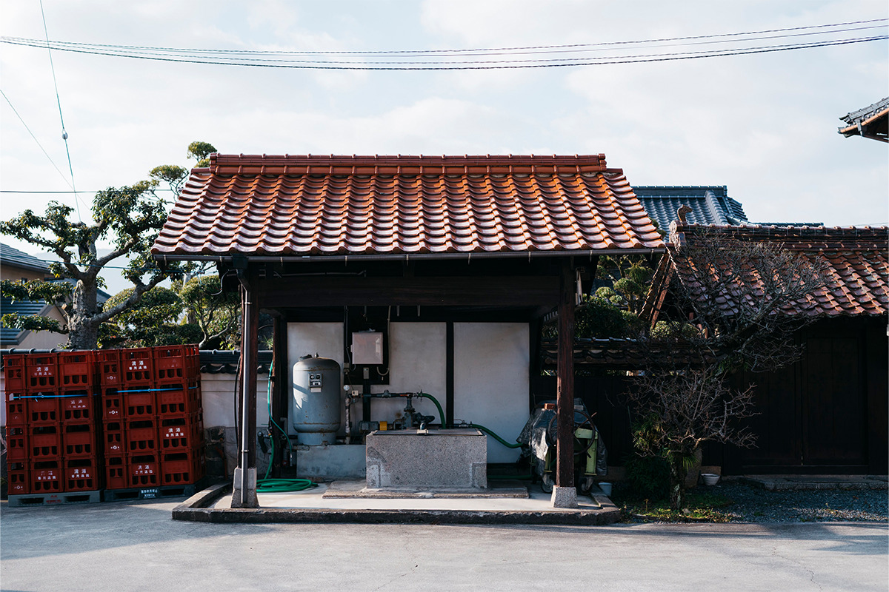
Рис используется только японский, а для кодзи, пропаренного риса с плесневым грибком-ферментатором, идут исключительно специальные сорта риса для сакэ. Восемьдесят процентов зерна выращено в Хиросиме, и основой служит «хаттан-нисики», сорт с ровным вкусом, из которого выходит чистое сакэ. Для дайгиндзё, премиального сакэ, берут «сэмбон-нисики», собственный сорт Хиросимы, выведенный скрещиванием «ямада-нисики» с местным «накатэ-синсэмбон»: он даёт цветущий аромат и утончённую сладость. Оставшиеся двадцать процентов риса поставляют Окаяма и Хёго. Окаяма отвечает за «акаива-омати», лучший рис сорта «омати», который расширяет вкус, а Хёго за «ямада-нисики» из района Тодзё, особой зоны высшего класса, и за редкий сорт «аияма» для дзюммай гиндзё. Хозяева пивоварни и сами выращивают «омати» на собственных полях, расширяя посадки и отказываясь от химии.
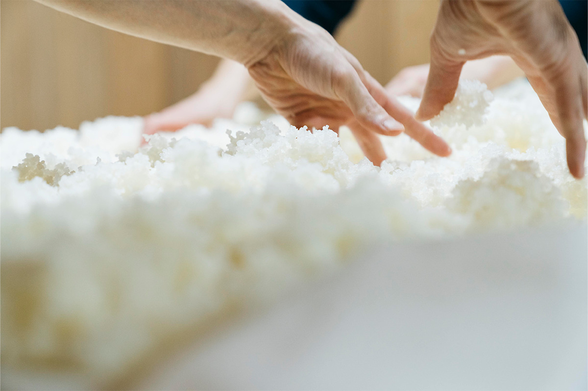
От отжима до хранения сакэ ведётся при низких температурах: концепция вкуса здесь «свежесть фруктов и сочность», и бутылка доносит аромат прямо из цеха.
Сорта
Три бутылки из Куросэ
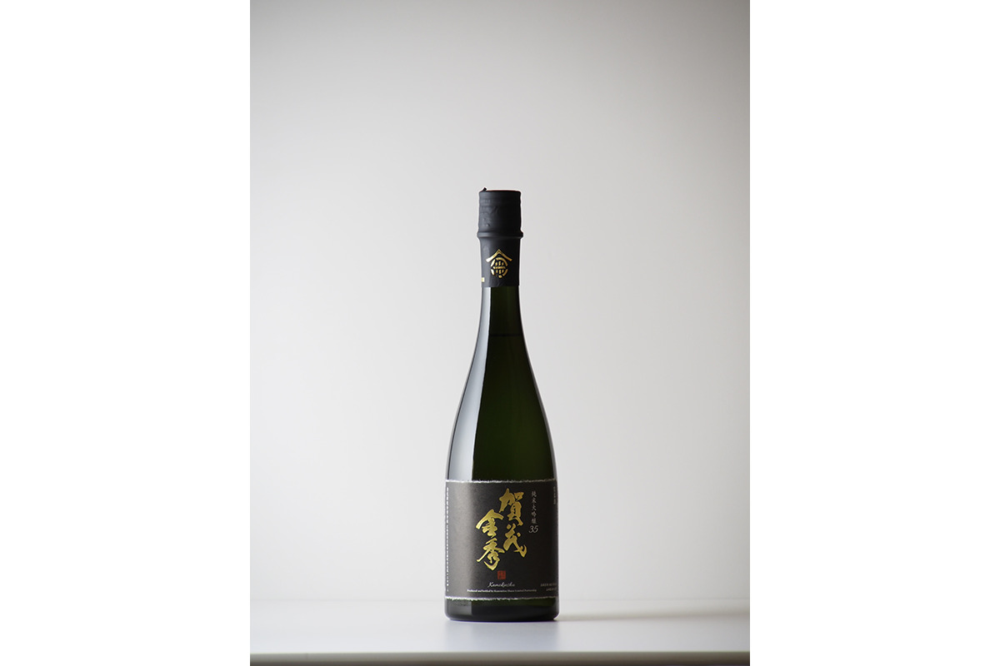
«Камокинсю дзюммай дайгиндзё 35» полгода зреет в холодных подвалах, отчего аромат становится округлым, а вкус тонким. Это сакэ раскрывает сорт «ямада-нисики» из Тодзё, рис с полировкой до тридцати пяти процентов, крепость шестнадцать градусов. Пить его лучше охлаждённым, из винного бокала. Цена: 6600 иен за 720 мл и 11 000 иен за 1,8 литра.
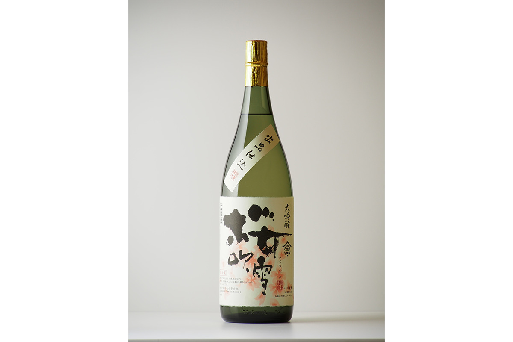
«Сакурафубуки дайгиндзё» варят из «сэмбон-нисики». Награды на конкурсах здесь обычное дело, а главное в этой бутылке, милая, чуть выпуклая сладость, какой у других сортов просто нет. Цена: 2915 иен за 720 мл и 5500 иен за 1,8 литра, крепость семнадцать градусов.
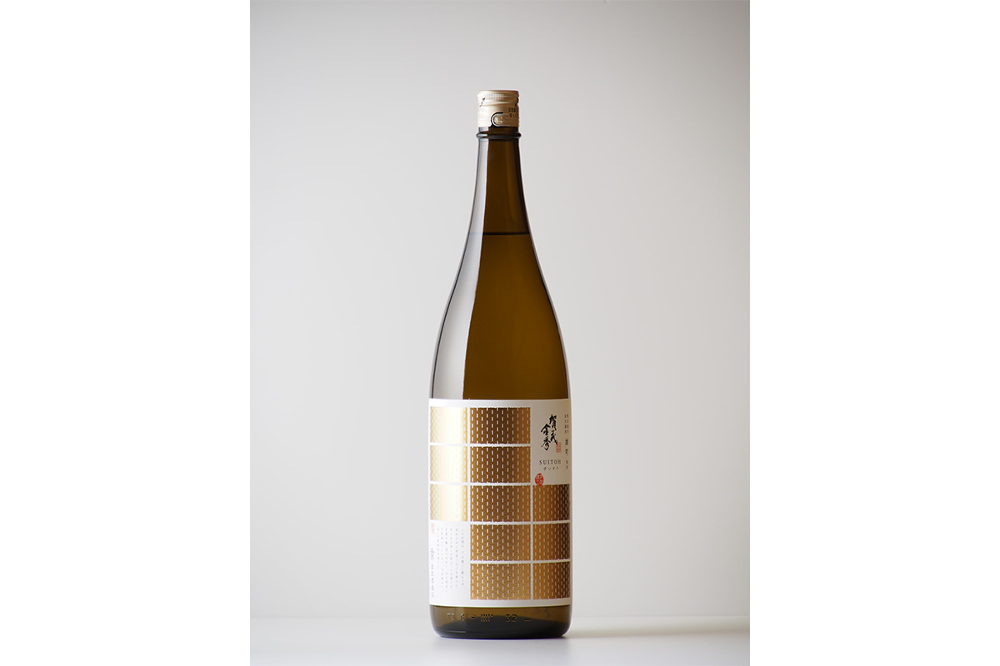
«SUITOH», по-японски «суйто», сделан из риса «омати», который вырастил на своих полях мастер пивоварни. Аромат сдержанный, с лёгким цитрусом, а вкус с выпуклой сладостью, лёгкой горчинкой и кислотой держит баланс древнего риса. Такое сакэ пьют охлаждённым, но и в подогретом виде, о-кан, оно не разочарует. Цена: 1760 иен за 720 мл и 3300 иен за 1,8 литра, полировка шестьдесят процентов, крепость шестнадцать градусов.
Магазин
Лавка, выросшая из куры
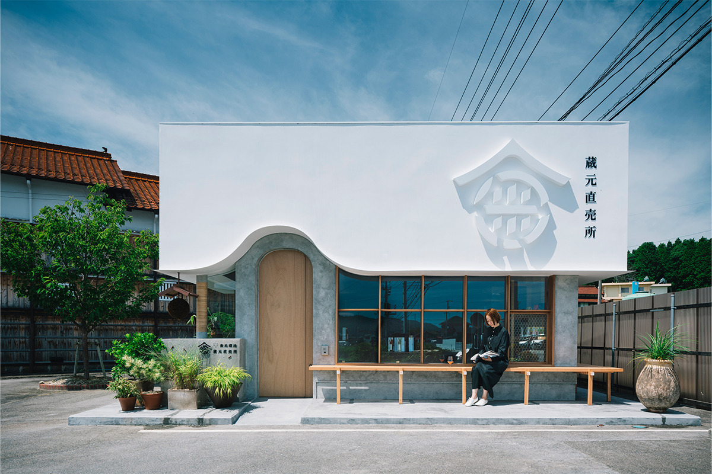
Прямо перед пивоварней, у трассы, работает лавка «Куромото тёкайдзё», фирменная продажа при заводе. Когда-то это было скромное деревянное здание меньше двадцати цубо (около 66 м²), потерянное перед огромной стеной исторической куры. Обновить его доверили архитектору Хироюки Накамото из бюро FATHOM в Курэ.
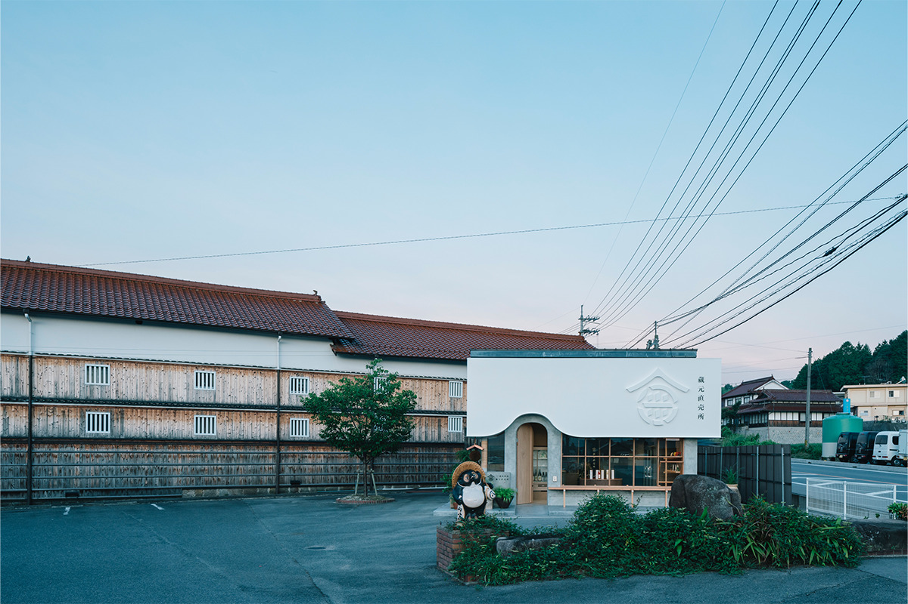
Архитектор вспоминает, что при виде стены пивоварни с её обожжённым кедром, штукатуркой и красной черепицей ему показалось, будто перед ним срез земляных пластов: столько слоёв истории в этих материалах. Три полосы материалов дают две чистые горизонтальные линии, и лавка подхватывает этот мотив, лишь мягко выпуская объём у входа. Штукатурку выбрали не случайно: сакэ издавна варилось для богов, и белый объём напоминает храмовые постройки.
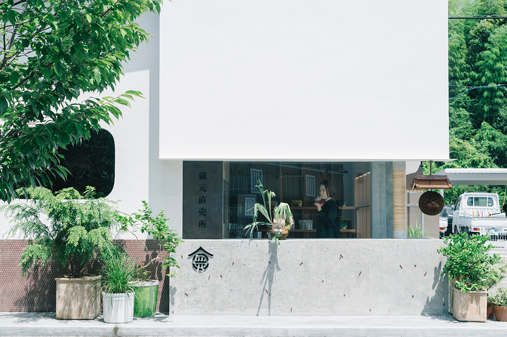
Деталей со смыслом здесь много. Справа от входа тянется угловая скамья, как энгава, открытая веранда старого японского дома: когда-то, по старинным описаниям, лавки пивоварен вставали прямо к дороге. Слева, на подоконнике, в штукатурку вморожены осколки бутылок из-под сакэ, которые должны были пойти в мусор: современный материал оказался запечатан в историческом слое, как окаменелость. Внутри та же игра: кирпич от дымоходов, синий цвет рабочих фартуков тодзи, медь и кикко, плетёная сетка с черепашьим узором из классических погребов для сакэ. Всё это складывается в образ живого брожения, как в чане с сакэ, где пузырьки нарастают слой за слоем.
«Канэмицу сюдзо» и лавка «Куромото тёкайдзё»
- Адрес
- префектура Хиросима, Хигаси-Хиросима, Куросэ, Номио, 1364-2
- Телефон
- +81 823-82-2006
- Часы работы
- 10:00–17:15
- Выходные
- воскресенье, праздники, Обон и новогодние каникулы
- Сайт
- kamokin.com
Сайдзё
«Хакуботан»: этикетка от Мунакаты Сико
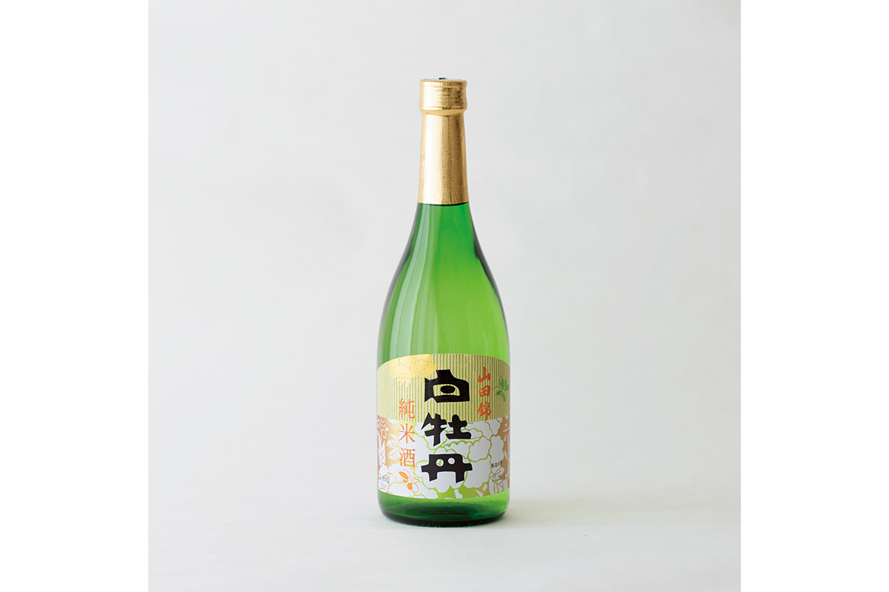
История второй пивоварни начинается в 1675 году, в третьем году эры Эмпё. «Хакуботан», «белый пион», из Сайдзё, старейшая пивоварня префектуры, чьё имя на слуху у любого любителя сакэ в Японии. В эпоху Эдо поэт-сатирик Сёкусандзин (1749–1823) посвятил «белому пиону» шуточные стихи, позже строку сакэ сложил писатель Нацумэ Сосэки (1867–1916), а на страницах «Бунгэй сюндзю» его вкус хвалил писатель Има Токо.
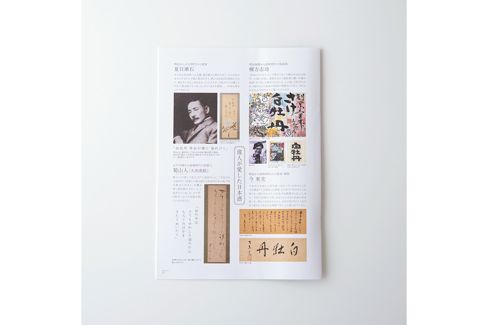
В эпоху Сёва логотип пивоварни нарисовал Мунаката Сико (1903–1975), великий гравёр, классик японской ксилографии. Мунаката много работал с народными промыслами: рисовал коробки для сладостей по всей стране, а у «Хакуботан» оставил ещё и гравюру «Цветок пиона» и яркие живописные листы. Этикетка, где фирменный знак соседствует с печатным цветком, получилась одновременно дерзкой и милой, глядеть на неё одно удовольствие.
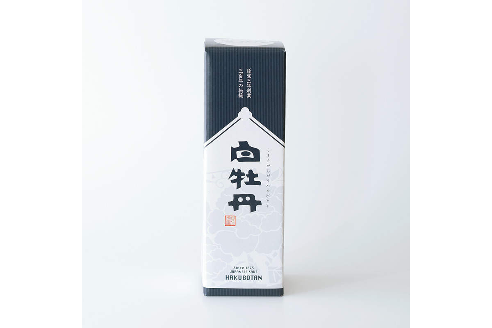
Из бутылок для подарка здесь чаще всего берут «Хакуботан Ямада-нисики дзюммайсю»: сакэ с телом и хребтом, целиком сваренное из риса «ямада-нисики», специального сорта для сакэ, с плотным вкусом рисовой закваски. При такой цене, 1257 иен за 720 мл, это подарок, которым не бывает слишком много.
Пивоварня «Хакуботан»
- Адрес
- префектура Хиросима, Хигаси-Хиросима, Сайдзё-хоммати, 15-5
- Телефон
- +81 82-422-2142, +81 120-76-1675 (бесплатный номер, звонки только из Японии, приём по будням с 9:00 до 17:00)
- Часы работы
- в будни 9:30–16:00, в субботу и воскресенье 10:30–16:00
- Выходные
- непостоянные, уточняйте перед визитом
- Сайт
- hakubotan.co.jp
В Куросэ и Сайдзё сакэ пьют по-разному: где-то в тишине старой куры, а где-то в белёсой лавке с видом на рисовые поля. Но обе бутылки рассказывают одну историю: земля Хиросимы умеет делать вкус, который хочется передавать дальше.